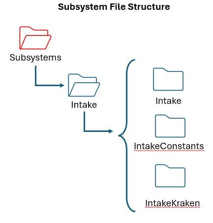

Subsystems
Subsystems are the basic units of functionally for our robot, such as drive trains and mechanical arms. They encapsulate low-level hardware objects (motor controllers, sensors, etc) and provide methods that can be used by Commands. We represent subsystems in code by using Objects. Objects are composed of Data Structures and Procedures, as explained in Programming Basics. You should learn those concepts before we look at the subsystems that are on the Robot.
Note
For this module the majority of the code implementation can be found in the Subsystems section of the FRC Documentation.
Lab - Example Code
The ProgTrain1 example code that we used in the previous session, is a bit complicated to teach to new developers. We need a very easy example to pick apart and explain what it is doing. Remember that is it better to walk first rather than run. So we have updated the Progtrain1 repository with a new subsystem. Take a minute and Pull down the repository to your laptop.
Note
It you are struggling to Pull a Github repository, you might want to reference the steps in the previous Lab!
Complete the Lab Steps
In VS Code, Open folder c:/projects/ProgTrain1 (under File go to Open Folder)
Note
If you receive a VS Code message asking if you trust the authors, you should click Yes - you trust the authors!!!
The subsequent sections will be based on the ProgTrain1 example code.
Subsystem Structure
In general, each subsystem should be placed in it’s own folder. This keeps things clean and avoids conflict with other developers. Taking a look at the Intake susbsystem inside the ProgTrain1 example code, it is organized as follows:
Note
The Subsystems folder can be found as a subfolder under Robot.
In the Subsystems folder we have a new folder called Intake. This folder holds all the components to make the Intake mechanism work. Inside the Intake Folder we have a java class also called Intake. This class contains all the processing logic (some would call it business logic) to make the Intake work. When you want to analyze what a subsystem does this is where you should start.
Important
Normally, this class is called IntakeSubsystem to help everyone understand what it is at a glance. However, many programmers shorten this name to Intake even though is causes some minor confusion with the folder name.
The Intake subsystem may need some constants that can be shared with other classes in the folder. For example, the motor ID numbers or the setpoints for the mechanism to travel would be examples of constants. Constants, by definition, are things that never change! We put these constants in a seperate Constants class (rather than bury them inside the subsystem class) to make them easy to find and change as needed.
Warning
Never put magic numbers in your code. (A Magic Number is any number that is placed in code without any definition what the number does.) Many programmers take shortcuts and insert a number into the robot logic only to find a few weeks later that they do not remember what the number represents. If you need to put a number in the robot code, make it a variable or constant with a descriptive name so that you will remember what it does!
Our team wants to seperate the lower level motor logic from the higher level functional logic to make the intake work. This is for a number of reasons:
If the mechanical team decides to swap the type of motor to another vendor, for example swap out a Kraken motor with a Neo motor, all of the logic to change out the motor is in one place. The business logic of running the subsystem is unchanged. This makes it much simpiler and faster to change out motors.
By keeping the business logic seperate from the motor logic you can focus on making the subsysem work, rather than the details of operating the motor.
It allows multiple programmers to work on the same subsystem. One programmer can focus on the processing logic and the other can work on the details of getting the motor working.
It allows us to have mutiple robots using the same subsystem program with different motors. The business logic is exactly the same only the motor logic is different. For example, if the Competition robot uses Kraken motors and the Practice robot use Neos and the Programming Robot uses bag motors. You would have a subsystem folder that contained Intake, IntakeConstants, IntakeKraken, IntakeNEO and IntakeBag classes.
When you write a subsystem you will not always have the motors available to run your code on. (For example if you are at home writing code.) So, for all the reasons we listed previously, we need you to seperate all the motor specific logic and put that in a seperate class. In the ProgTrain1 example code, we created a class called IntakeKraken after the motor that we are using. If we were using a NEO motor we would have called it IntakeNEO. (I know it is a very clever naming convention!)
Important
As a subsystem developer you are responsible to ensure that your subsystem can run in simulation. Programming time on the physical robots is usually in very short supply. That means we need to be able to test the majority of our code in simulation-without a robot.
Code Walk Through
IntakeConstants
We begin the constants class by defining any Magic Numbers such as the motor ID numbers, what speed we want the Intake to Intake with or what speed we want to eject stuck items in the Intake.
public class IntakeConstants {
public static int kRollerMotorID = 23;
public static int kRollerEncoderID = 24 ;
public static double kReduction =(1.0/1.0);
public static double kIntakeSpeed = 2000.0;
public static double kEjectSpeed = 3000.0;
public static String kBusName = "sim";
Next, we define the motor configuration. Our team uses the .with convention to explicity define all the motor configuration items.
// Define configuration for Intake Roller Motor
public static final TalonFXConfiguration intakeRollerConfigs = new TalonFXConfiguration()
.withCurrentLimits(
new CurrentLimitsConfigs()
.withStatorCurrentLimit(40)
.withStatorCurrentLimitEnable(true)
.withSupplyCurrentLimit(40)
.withSupplyCurrentLimitEnable(true)
.withSupplyCurrentLowerLimit(30)
.withSupplyCurrentLowerTime(1)
).withTorqueCurrent(
new TorqueCurrentConfigs()
.withPeakForwardTorqueCurrent(40)
.withPeakReverseTorqueCurrent(-40)
).withMotorOutput(
new MotorOutputConfigs()
.withInverted(InvertedValue.CounterClockwise_Positive)
.withNeutralMode(NeutralModeValue.Coast)
).withMotionMagic(
new MotionMagicConfigs()
.withMotionMagicCruiseVelocity(10.0)
.withMotionMagicAcceleration(10.0)
Next, we define the PID parameters. In this case we are using 2 of the 3 available slots to show the difference between voltage control and torque control. The PID values are very different. Keep in mind the fundamental differences in units when establishing a PID. Voltage control is in units of Volts. Torque Control is in units of AMPS. Torque Control can give you a 15% performance increase over voltage control in most circumstances. It is the preferred control method.
Important
You must set the PID values appopriately for the type of motor control you will be using in your subsystem.
).withSlot0(
new Slot0Configs() /* Voltage-based velocity requires a velocity feed forward to account for the back-emf of the motor */
.withKP(0.11) // An error of 1 rotation per second results in 0.11 V output
.withKI(0.0) // No output for integrated error
.withKD(0.0) // No output for error derivative
.withKS(0.1) // To account for friction, add 0.1 V of static feedforward
.withKV(0.12) // Kraken X60 is a 500 kV motor, 500 rpm per V = 8.333 rps per V, 1/8.33 = 0.12 volts / rotation per second
).withSlot1(
new Slot1Configs() /* Torque-based velocity does not require a velocity feed forward, as torque will accelerate the rotor up to the desired velocity by itself */
.withKP(5.0) // An error of 1 rotation per second results in 5 A output
.withKI(0.0) // No output for integrated error
.withKD(0.0) // No output for error derivative
.withKS(2.5) // To account for friction, add 2.5 A of static feedforward
);
And finally, we load the IntakeConfigs object with the IntakeRollerConfigs based on which robot we are using.
Important
To keep things simple, this example only shows motor configurations for a single robot. Later on we will explain how to have a single constants file that supports multiple robots.
/********************************************************
* Based on the robot selected, load Intake configs with
* the selected robot configuration
********************************************************/
public static final IntakeConfigs IntakeConfigs =
switch (Constants.getRobot()) {
case COMPBOT -> new IntakeConfigs(
intakeRollerConfigs
);
case SIMBOT -> new IntakeConfigs(
intakeRollerConfigs
);
case DEVBOT -> new IntakeConfigs(
intakeRollerConfigs
);
case CAMERABOT -> new IntakeConfigs(
intakeRollerConfigs
);
};
Intake
We start out by defining the subsystem class and indicate that is is extending the existing WPILIB SubsystemBase class. Next we list any vaiables we are going to use in the class sucj as:
ioStats - which is a class to pass variables bwtween the Intake class and the IntakeKraken class.
intakeShuffleboard - defines a new tab to add to the Shuffleboard
m_IntakeKraken - is the instance of the IntakeKraken class. The getInstance() method returns an instance of the class.
public class Intake extends SubsystemBase {
private final IntakeStats ioStats = new IntakeStats();
private final ShuffleboardTab intakeShuffleboard;
private final IntakeKraken m_IntakeKraken = IntakeKraken.getInstance();
Next, we define the varibles we want to put on the Shuffleboard:
/* Shuffleboard entrys */
private GenericEntry intakePosition;
private GenericEntry intakeVelocity;
private GenericEntry intakeAppliedVolts;
private GenericEntry intakeSupplyCurrent;
private GenericEntry intakeTorqueCurrent;
private GenericEntry intakeTemp;
private GenericEntry intakeState;
Now we define the states used in this subsystem:
/* Define the Valid States for the Intake Subsystem */
public enum State {
IDLE,
INTAKE,
RUNNING,
CHARACTERIZE,
EJECT;
}
Now, we define a variable to hold the current state and initalize it to the Idle state:
/* Variable to hold the current state of the state machine */
private State currentState = State.IDLE;
Next up, we define a class to hold the data to pass between the Intake and IntakeKraken classes. That way we are only returning one single variable(the class).
/* a Generic class for handling the IO stats generated in the Kraken module */
class IntakeStats {
//Stats for the Intake/Expel Motor
public boolean MotorConnected = true;
public double rollerPositionRads = 0.0;
public double rollerVelocityRpm = 0.0;
public double rollerAppliedVolts = 0.0;
public double rollerSupplyCurrentAmps = 0.0;
public double rollerTorqueCurrentAmps = 0.0;
public double rollerTempCelsius = 0.0;
}
Now for the Constructor. First, we create a new shuffleboard tab (named Intake) and add a number of widgets to the tab. Give each widget a window title and we also connect these widgets to the variable names we created earlier:
/** Constructor - Creates a new IntakeSubsystem. */
public Intake() {
//Define Suffleboard Tab for this Subsystem
this.intakeShuffleboard = Shuffleboard.getTab("Intake");
intakeVelocity = this.intakeShuffleboard.add("Velocity (rot per s)", 0.0).getEntry();
intakePosition = this.intakeShuffleboard.add("Position (rot)", 0.0).getEntry();;
intakeSupplyCurrent = this.intakeShuffleboard.add("Supply Current", 0.0).getEntry();
intakeTorqueCurrent = this.intakeShuffleboard.add("Torque Current", 0.0).getEntry();
intakeTemp = this.intakeShuffleboard.add("Motor Temp", 0.0).getEntry();
intakeAppliedVolts = this.intakeShuffleboard.add("Applied Volts",0.0).getEntry();
intakeState = this.intakeShuffleboard.add("State","").getEntry();
}
Now, we create a private function to handle changing states:
private void flipState(State inState ) {
System.out.println("Setting state...." + inState.name());
currentState = inState;
}
Now for the good part, we get down to the state processing in our subsystem. Notice that this method is an override. That means it is overriding a method in the WPILIB SubSystemBase class. In this case, the periodic() method will be called automatically by the robot controller approximately every 20 milliseconds. Which is very helpful, we do not need to write any code to keep looping over the state, it will just happen automatically.
The first thing we do is get the updated statistics from the motor. Then we have a switch statement that defines an anonymous function for each of the states. The m_IntakeKraken variable holds the instance of our IntakeKraken class. So if you look at the IDLE state, we are calling the Stop() method in the IntakeKraken class. You will also notice that we advance to the next state by calling the flipState() method that we defined earlier and passing the new state we want. Once we are done processing the current state we update the shuffleboard with our motor statistics and we are done.
Note
The -> instruction creates an anonomous function for java code within the curly brackets.
@Override
/* This method will be called once per scheduler run */
public void periodic() {
//go update the signal data
m_IntakeKraken.updateStats(ioStats);
switch (currentState) {
case IDLE -> {
m_IntakeKraken.stop();
}
case INTAKE -> {
//run intaking motoring forward
m_IntakeKraken.runVelocity(IntakeConstants.kIntakeSpeed, 0.0);
flipState(State.RUNNING);
}
case RUNNING -> {
}
case EJECT -> {
//Run the intake rollers backwards
m_IntakeKraken.runVelocity(-IntakeConstants.kEjectSpeed,0.0);
flipState(State.RUNNING);
}
case CHARACTERIZE -> {}
} // End of Switch
//Update Dashboard with Telementry Data
UpdateTelemetry();
}
Next we have a method for moving the data from the stats class we defined to the Shuffleboard widgets:
/************************************************
* Update the Shuffleboard with Motor Statistics
************************************************/
private void UpdateTelemetry() {
intakeVelocity.setDouble(ioStats.rollerVelocityRpm);
intakePosition.setDouble(ioStats.rollerPositionRads);
intakeSupplyCurrent.setDouble(ioStats.rollerSupplyCurrentAmps);
intakeTorqueCurrent.setDouble(ioStats.rollerTorqueCurrentAmps);
intakeAppliedVolts.setDouble(ioStats.rollerAppliedVolts);
intakeTemp.setDouble(ioStats.rollerTempCelsius);
intakeState.setValue(currentState.name());
}
Note
We could have added this Shuffleboard code to the end of our periodic() method, but to keep things clean we split it out to a seperate method.
Now we define some methods to be used by the old style command language. More on those later:
/************************************************
* External functions for Old Command Style
************************************************/
public void runVelocity(double speed) {
m_IntakeKraken.runVelocity(speed,0.0);
}
public void stop() {
m_IntakeKraken.stop();
}
And finally, at the end our of class we define any commands that can be fired off by other classes on the robot, or by button presses in the RobotContainer. These are very simple commands that just run the FlipState() method we defined earlier. These are commands that are fired off by the WPILIB Command Scheduler. We will talk about these a lot more in the next section on Commands.
/**
* Set command to Intake
*
* @return a command
*/
public Command IntakeCommand() {
// Subsystem::RunOnce implicitly requires `this` subsystem.
return runOnce(
() -> {
/* one-time action goes here */
flipState(State.INTAKE);
});
}
/**
* Set command to Stow
*
* @return a command
*/
public Command IdleCommand() {
// Subsystem::RunOnce implicitly requires `this` subsystem.
return runOnce(
() -> {
/* one-time action goes here */
flipState(State.IDLE);
});
}
/**
* Set Command to Eject
*
* @return a command
*/
public Command EjectCommand() {
// Subsystem::RunOnce implicitly requires `this` subsystem.
return runOnce(() -> {flipState(State.EJECT); });
}
IntakeKraken
The IntakeKraken class contains all of the technical logic necessaray to operate any motors and/or sensors needed in the subsystem. It this example there is only a single Kraken motor that is being used. But the concepts in this example will scale to multiple motors and multiple sensors.
First, we define the class and any variables that we need in the class:
public class IntakeKraken {
private static IntakeKraken instance = null;
private double appliedVolts = 0.0;
private boolean isSimulation = false;
private boolean useTorque = true;
Next, we define any physical hardware being used in the class. We get the Motor ID and the name of the CAN bus from the IntakeConstants file.
// Hardware
private TalonFX m_talonFX = new TalonFX(IntakeConstants.kRollerMotorID, IntakeConstants.kBusName);
Next, we define the status signals that we are going get from the motor. We must use the correct data type for each varible:
// Status Signals
private final StatusSignal<Angle> rollerPosition;
private final StatusSignal<AngularVelocity> rollerVelocity;
private final StatusSignal<Voltage> rollerAppliedVolts;
private final StatusSignal<Current> rollerSupplyCurrent;
private final StatusSignal<Current> rollerTorqueCurrent;
private final StatusSignal<Temperature> rollerTempCelsius;
Now, we define the constructor. The first task is to run the configuration aqgainst the motor we defined previously. The configuration comes from the IntakeConstants class. Make sure to test for success and if not print out a message on the console.
//Constructor
public IntakeKraken() {
/**********************************
* Configure the Roller Motor
***********************************/
// Apply Configuration from Intake Constants to motor
StatusCode statuscode = m_talonFX.getConfigurator().apply(IntakeConstants.IntakeConfigs.intakeRollerConfigs(), 1.0);
if(!statuscode.isOK()) {
System.out.println("Configuration Failed on Intake Roller Motor ");
}
Now, we connect the status signal variables we defined earlier to the motor functions to get the data. So for the Position data, we call the getPosition method on the m_talonFX motor and put the data in the Status Signal variable rollerPosition.
// Set signals
rollerPosition = m_talonFX.getPosition();
rollerVelocity = m_talonFX.getVelocity();
rollerAppliedVolts = m_talonFX.getMotorVoltage();
rollerSupplyCurrent = m_talonFX.getSupplyCurrent();
rollerTorqueCurrent = m_talonFX.getTorqueCurrent();
rollerTempCelsius = m_talonFX.getDeviceTemp();
The next code snippet is very important. The code that gets the status signals in the previous code block sends a command on the CAN bus every time it is executed, and then the motor sends a response message with the requested data. This process can flood the CAN bus with these status messages-the same CAN bus that is used for sending motor instructions. And remember that the loop on the periodic() method is running every 20ms or 50 times per second! To avoid flooding the bus with these informational messages, we want to synchronize the messsages to happen at the same time. Let’s request them all at once and get the response all at once. Even better, let’s tell the motor to send them to us automatically every 100ms (10 times per second). This will reduce the traffic on the CAN bus that will in turn allow other traffic to pass. You must set a BaseStatusSignal configuration in every subsystem to avoid killing the robot.
BaseStatusSignal.setUpdateFrequencyForAll(
100.0,
rollerPosition,
rollerVelocity,
rollerAppliedVolts,
rollerSupplyCurrent,
rollerTorqueCurrent,
rollerTempCelsius
);
Important
Do not set an update frequency lower than 100ms. The CANivore hardware can only communicate at 100ms. Any time shorter than that returns the same response. This floods the CAN bus with duplicate status messages and can literally bring down the robot.
This code block sends the motor definition in your subystem (in this case m_talonFX) to the Physics Simulator. But only if the code is running in simulation. As this code is in the Constructor of the class it only runs a single time when the class is instantiated. It also sets a boolean variable to true, so that we do not have to call the Utils.isSimulation() method again.
/* Defines the motor to the Physics Simulation-only in Simulation */
if(Utils.isSimulation()) {
isSimulation = true;
PhysicsSim.getInstance().addTalonFX(m_talonFX, 0.001);
}
Next, we set up the communication for the motor to return the statistics back to your subsystem. The updateStats method provides a way for the Intake class to request data from the motor. It passes in the IntakeStats class to hold the data. It also runs the Physics Simulator if we are running in Simulation Mode.
/****************************************************************************************
* Get the IO statictics from the motor and put them into the passed in IntakeStats class
*****************************************************************************************/
public void updateStats(IntakeStats stats) {
/* Only run the Physics Simulator in Simulation */
if(isSimulation){
PhysicsSim.getInstance().run();
}
stats.MotorConnected =
BaseStatusSignal.refreshAll(
rollerPosition,
rollerVelocity,
rollerAppliedVolts,
rollerSupplyCurrent,
rollerTorqueCurrent,
rollerTempCelsius)
.isOK();
stats.rollerPositionRads = rollerPosition.getValueAsDouble();
stats.rollerVelocityRpm = rollerVelocity.getValueAsDouble();
stats.rollerAppliedVolts = rollerAppliedVolts.getValueAsDouble();
stats.rollerSupplyCurrentAmps = rollerSupplyCurrent.getValueAsDouble();
stats.rollerTorqueCurrentAmps = rollerTorqueCurrent.getValueAsDouble();
stats.rollerTempCelsius = rollerTempCelsius.getValueAsDouble();
}
And finally, we add in the methods that are called by the Intake class to process specific motor functions, like run the motor based on a voltage input, run the motor with a certain velocity (in rotations per minute), stop the motor, or Characterize the motor (more on that later)
public void runVolts(double Voltage) {
appliedVolts = MathUtil.clamp(Voltage,-12.0, 12.0);
m_talonFX.setControl(new VoltageOut(appliedVolts));
}
/*********************
* The runVelocity function can run either:
* --CTRE Velocity Voltage Mode (The Velocity is accomplished using voltage)
* or
* --CTRE Velocity Torque Mode (the Velocity is accomplished using Torque)
*
* The Configuration of the motor is different based on which option you choose (See IntakeConfig)
* Simply set the useTorque boolean for the option you want
*********************/
public void runVelocity(double RPM, double Feedforward) {
//Convert rotations per minute into rotations per second
double desiredRotationsPerSecond = (RPM/60.0);
if(!useTorque) {
/* Use velocity voltage */
m_talonFX.setControl(m_velocityVoltage.withVelocity(desiredRotationsPerSecond).withSlot(0));
} else {
/* Use velocity torque */
m_talonFX.setControl(m_velocityTorque.withVelocity(desiredRotationsPerSecond).withSlot(1));
}
}
public void stop() {
/* tell the motor to brake */
m_talonFX.setControl(m_brake);
}
public void runCharacterization(double input) {
}
Enabling Simulation
Important
As the subsystem developer you are responsible for ensuring that any subsystem that you develop is capable of running in simulation.
It is very important that the subsystem you develop is capable of running in simulation. As explained previously, simulation is the ability to test your code without a robot. The good news it that is realtively easy to do.
If you take a look at the IntakeKraken class in the ProgTrain1 example, you will note that the exact same code works for both simulation and the physical robot. To make this work there are two specific features of this code that you must include in your subsystems. Let’s look at them one at a time:
/* Defines the motor to the Physics Simulation-only in Simulation */
if(Utils.isSimulation()) {
isSimulation = true;
PhysicsSim.getInstance().addTalonFX(m_talonFX, 0.001);
}
This code block sends the motor definition in your subystem (in this case m_talonFX) to the Physics simulator. But only if the code is running in simulation. As this code is only in the Constructor of the class it only runs a single time when the class is instantiated. It also sets a boolean variable to true, so that we do not have to call the Utils.isSimulation() method again.
/* Only run the Physics Simulator in Simulation */
if(isSimulation) {
PhysicsSim.getInstance().run();
This code block is part of the UpdateStats method, so each time updates stats is called, the Physics Simulator will advance the model.
These are the only code changes needed to aloow the IntakeKraken class to run both in simulation and with the physical robot.
Note
You must also include the PhysicsSim.java and TalonFXSimProfile.java in your robot project. These modules can be found in the sim folder under the robot folder.
References
FRC Documentation - Subsystems
Java Tutorial on W3Schools
QUT Robot Academy Measuring Motion